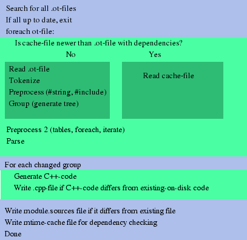

The internals of the selftest system
This currently very unstructured and messy document describes the
internal workings of the selftest system, both the parser/compiler and
the runtime.
The runtime
Initializing and running the testsuite
TestSuite::main( int *argc, char *argv[] )
This function should be called just after opera has been initialized,
usually from main, WinMain or equivalent function.
It parses test-suite specific arguments.
If now is supplied as part of one of them, it runs all tests
that does not require initialization and then tries to exit opera. In
that case this function will not return.
If there is a test argument, but no
now part, a flag is set, the testsuite arguments are removed
from argv, and argc is decremented to match.
void TestSuite::run( )
This function should be called when opera has been fully
initialized, just before the messageloop is entered.
If the testsuite is to be run, this function will send a message to
itself that causes the TestSuite::step() function to be called.
void TestSuite::step()
This function is called from the message handler in opera.
It runs one step of the testsuite, which basically means that it
runs the current test, or a part of the current test if it uses delay, or requires a
document and no window with a document is available.
Testsuite structure
This information is totally useless unless you plan to change how the testsuite works.
Each testgroup is internally represented as a class implementing the TestGroup interface.
class TestGroup
{
protected:
int TS_next_test;
int TS_skip_group;
public:
virtual int TS_step() = 0;
virtual TestGroup *TS_next() = 0;
virtual void TS_init() = 0;
virtual void TS_exit() = 0;
};
The very first time TestSuite::step is called it creates an instance of the
first testgroup, and calls TS_init in it.
The rest of the time it keeps calling TS_step in the current testgroup
until it returns 0, then it calls TS_exit() in the current group, then
TS_next() to get the next group, and if it did get a new group it
calls TS_init() in it and sets it as the current group, and deletes
the old group.
If there are no more groups TestSuite::step prints a summary of the
testresults and returns 0, signaling that the message loop should
exit. This is currently done in mhpi.cpp by calling exit()
directly.
If TestSuite::step() returns 1, mhpi.cpp immediately posts a new
MSG_TESTSUITE_STEP message, which will cause it to call step() again,
if any other number is returned mhpi.cpp will simply return, this is
used to implement asynchronous tests, they will post a
MSG_TESTSUITE_STEP message once they are done.
html, ecmascript and manual tests are always asynchronous
The parser
The parser is a program written in Pike that locates all files with an
extension .ot in the source directories, parses them and then
generates a C++-file using a template file.
Locating source files
The program starts by recursively locating all files with a name that
ends with .ot but does not start with .. It then parses each file
in the order they were located (the order is, however, largely
irrelevant).
Parsing

Tokenization
The first pass of the parsing is a simple tokenization of the input
data, done using the Parser.Pike module in pike. This is only done if
the .ot-file has changed since last time it was parsed. Since pike
allows all tokens that are allowed in C++, this works surprisingly
well.
Each token-object is annotaded with the filename and the linenumber where it was found.
This code is imported from the pike runtime library, see the
directory <pikedir>/lib/modules/Parser.pmod/, files Pike.pmod and C.pmod
Building the tree
The tokens are then grouped in such a way that lists ({}, (), [] etc)
are grouped, recursively, into a single node, with subnodes
representing each element in the list. This is done since it greatly
simplifies the other passes.
This code recides in the function group() in NodeUtil.pmod
String comments
Then the parsetree is recursively searched to locate all
"string comments", that is, comments on the form //! <text here>
which are converted to strings (in this case the string "<text here>\n")
Look no further than parse_tests.pike convert_special_comments
Comment removal
Then all comments are removed
This one is in NodeUtil.pmod remove_comments
After this stage the parsed tokens are serialized and saved to disk
in a cache-file.
Table, foreach and friends
After the grouping and stringification, the code is run through a
multi-pass parser that handles the table, foreach and iterate
keywords. It also search for classnames the be used for the
transformation of the global secion.
The preprocessor is run once for each time a foreach or iterate is
expanded in the parsetree, to allow foreach and iterate inside other
foreach and iterate.
tables are removed from the tree completely, and added to a global
list of tables
foreach is expanded by looping over the table, and then duplicating
the nodes in the foreach block once for each loop, with the
identifiers used in the foreach statement replaced with the values for
the current table row, and the special syntax $(identifier) replaced
anywhere (inside any other tokens) with the same value.
iterate() is basically replaced with a for loop, and as a
side-effect sets a flag in the table that causes it to be included it
in the generated C++-code.
The main code can be found in the function preprocess in
parse_tests.pike
The token replacement code for foreach can be found in the
NodeUtil.pmod::replace_identifier and NodeUtil.pmod::replace_macro
functions.
Parsing the tree
The top-level of the parsetree is then parsed to locate all other
things handled by the selftest system, such as tests, group
definitions, include statements etc. See the manual for a list of the supported keywords.
Once a test or group has been located, a new Group or Test object
is created, the latter added to the list of tests in the current
group, and the group added to a toplevel list of groups.
This code can be found in parse_tests.pike::parse_file (the
while(1) loop). This function is also where the calls the passes above
recides
Transformations
The transformations are mainly performed when code is added to the
test or group (as in the case of verify or the global section)
Global section
Moving definitions of class methods
Move out all TYPE ClassName::FunctionName( TYPE ) { } blocks to the
toplevel scope, to be compatible with booth vc++ and gcc.
In the process the ClassName has to be fixed to include the
classname of the testgroup class.
parse_tests.pike::recursively_fix_class_names
Rewriting toplevel variables with initialization assignments
Code such as int q = 10; cannot be included directly in the
global section, since each testgroup is converted to a class, and that
kind of variable initialization is not allowed for class-local
variables.
They are thus moved to the init section (thus basically is
moved to the constructor of the class).
The function parse_tests.pike::move_initializers
Locating and moving extern declarations and defines
All #define directives and extern declarations are moved to the
start of the test-group, to make it possible to use them in the tests.
Test sections
verify
Code generation
Not up to date
The template file
A file named template.cpp is read. In this file the following
strings (Note: not identifiers this time, this is a low-level replace
without parsing) are replaced:
__YEAR__
The year when the file was generated. This is used to update the
copyright header in the template file, e.g.: "Copyright (C)
2002-__YEAR__ Opera Software AS"
__TESTS__
All the classes that makes up the test-groups, and in them all that
methods that make make up the tests, and their subtests. Also all
methods defined in classes in the tests, and the success variables
used to indicate if a file has succeeded or not.
__DEFINES__
All defines and extern declarations found in the tests.
__FIRST_GROUP__
The name of the class that is the first testgroup. Used in the runtime
to get it all started.
__INCLUDES__
All includes generated from include statements, with associated
#line indicators that show where the include was found.
__TABLES__
All the tables used in the iterate.
The code that outputs code can be found in various places in
parse_tests.pike, the easiest way to locate it is probably to go to
the main method in parse_tests.pike and start from there.
However, if you look for define and call methods in the various
classes in parse_tests.pike you will find most of the code.
Dependencies
The testgroups and their tests are reordered in such a way that any
dependencies are resolved, that is, if test A depends on test B, it
will be outputted after B. In the same way, if a test in group A
depends on a test in group B, the group B will be called before group
A, and currently also placed before group A in the file.
parse_tests.pike::resolv
Writing the result
The final code is compared to the exising optestsuite.cpp (if any). If
there are no changes, nothing is written.
parse_tests.pike::main
A note about #line
If you open optestsuite.cpp after it has been generated, you will
notice that there are a lot of #line statements in it, unless you are
running the parse_test.pike program in debug mode (see
parse_tests.pike::main, this mode is intended to be used to debug the
testsuite generation process, not to debug tests)
The testsuite runtime system